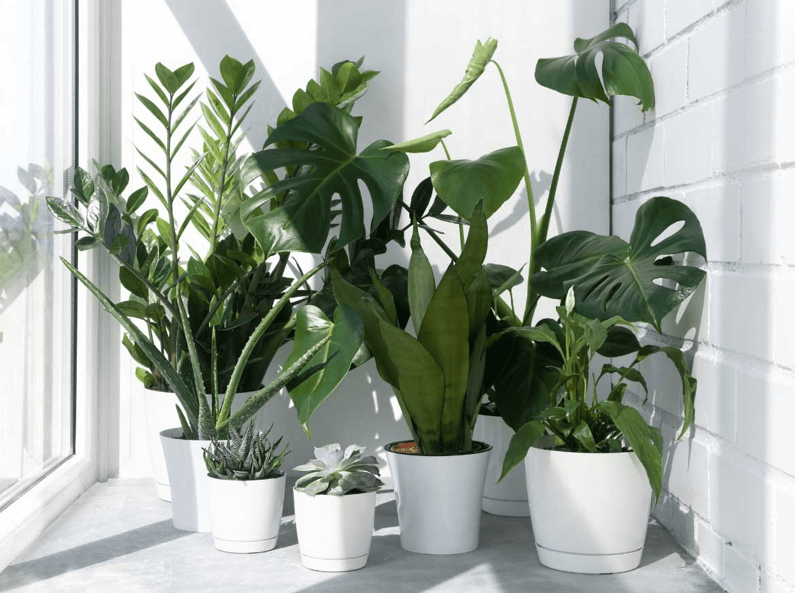

We are a family business that since 1995 has been with you bringing joy to your homes, trying to give the best of ourselves and enjoying every moment.
We began in the 1990s in a nursery in the Belgrano neighborhood, broadening our horizons towards new ventures:
- Plant nurseries in the neighborhoods of Villa Urquiza and Villa Pueyrredón, distributor in the Villa Maipú neighborhood, crops in Garin and maintenance services in different neighborhoods of the Federal Capital and Buenos Aires.
- Always trying to improve day by day to maintain our service, price and quality.

Our love for nature and decoration led us to continue innovating and because of your love we were able to continue growing. That's why we tell you:
Thank you very much for being part of our community and supporting us at all times!